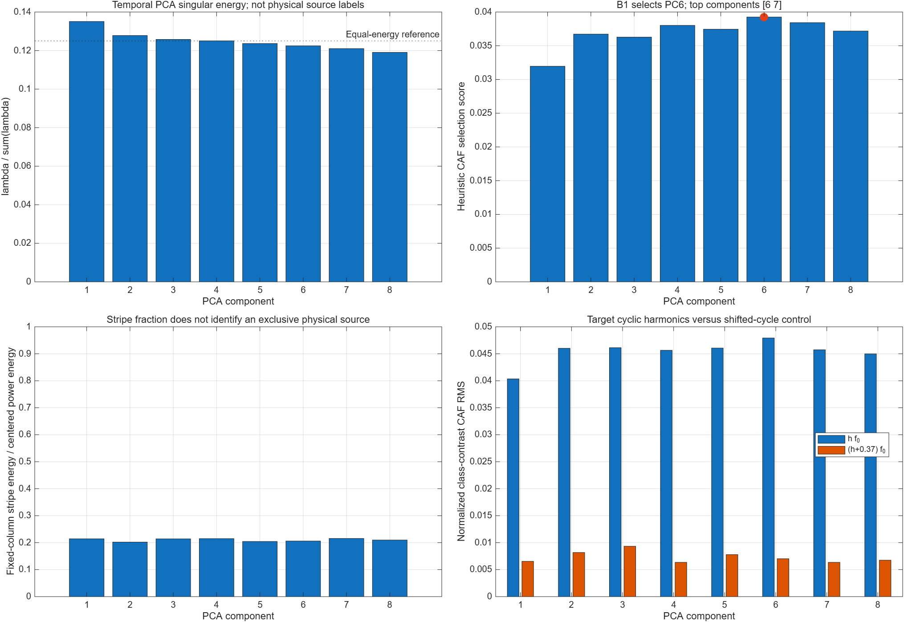
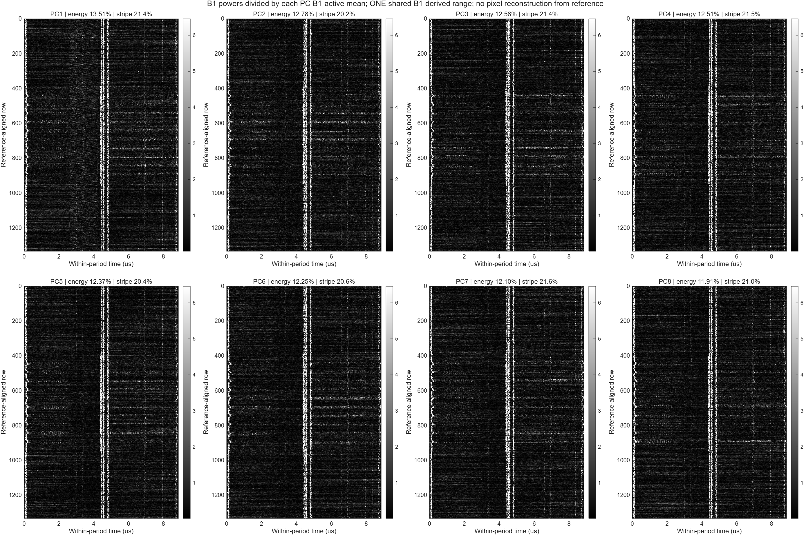
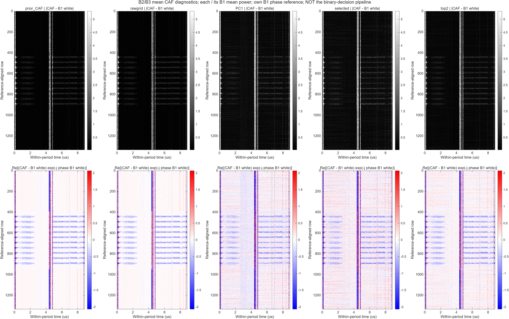
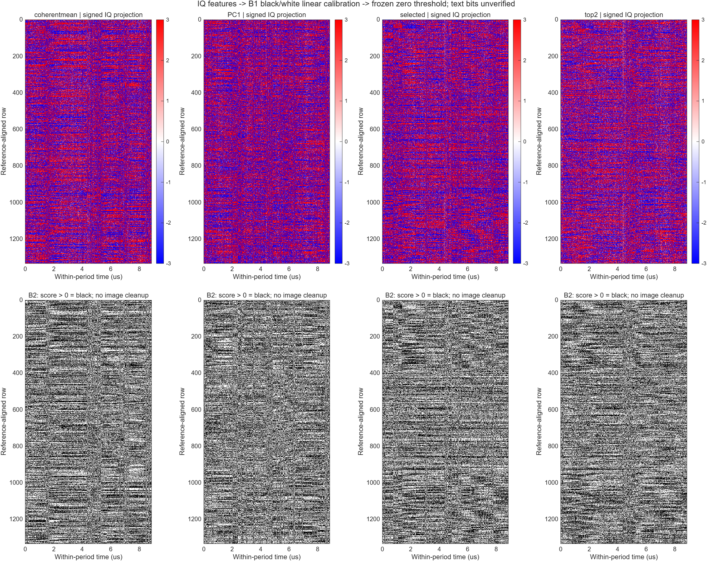
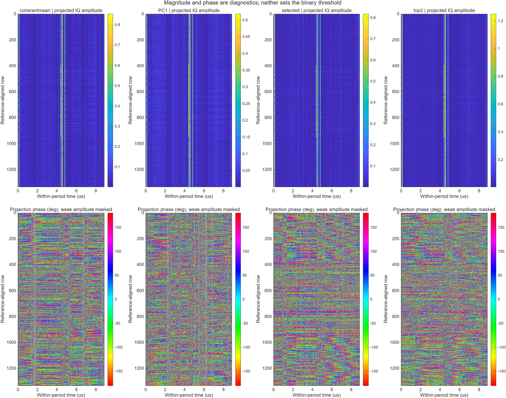
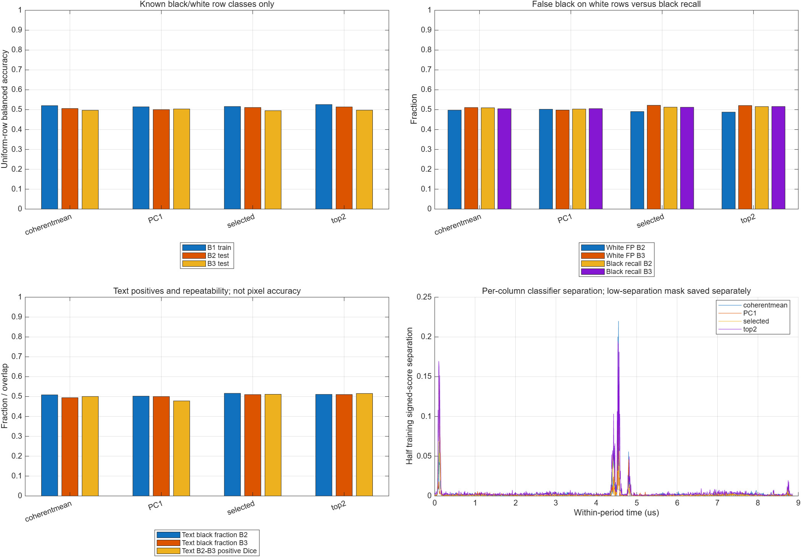
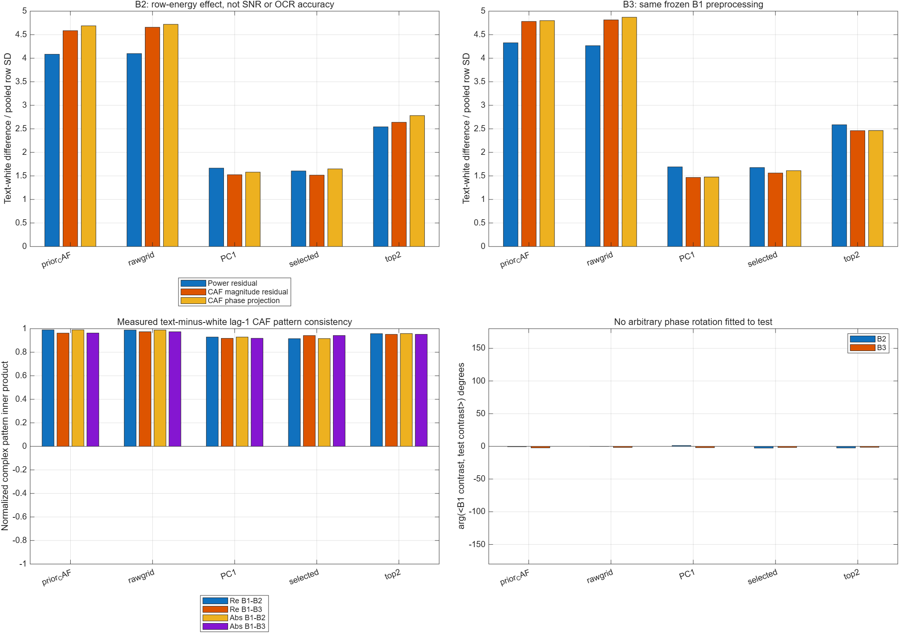
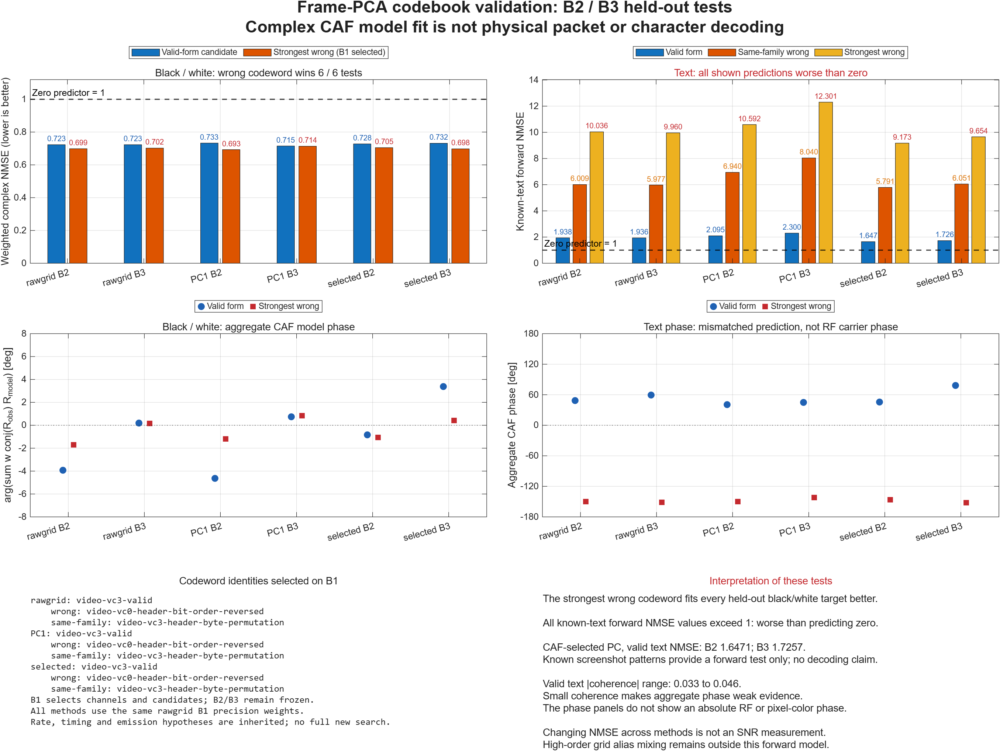

2026-10-27 · 실제 100 MHz IQ · MATLAB R2026b · 8프레임 × 3구간
복소 IQ를 투영한 뒤 이진화
구현 완료. 현재 프레임 축 SVD에서는 문자 이진 복원이 성립하지 않았다. CAF에 남는 문자 구조와 IQ 직접 판정의 실패를 함께 확인한다.
PC6 선택은 원하는 물리 방사원 식별을 뜻하지 않는다. 균형정확도 약 50%, 오답 codeword 우세, 문자 forward NMSE > 1이라는 실패 조건을 그대로 남겼다.
요청한 연산
X = UΣVᴴ → yⱼ = Xvⱼ/√8 → q = [선택한 복소 성분]
w꜀ = (C + λI)⁻¹(μ검정,꜀ − μ흰색,꜀)
s(r,c) = Re{w꜀ᴴ[q(r,c) − (μ검정,꜀ + μ흰색,꜀)/2]}
bit = 1[s > 0] · 1은 검정
B1에서만 V, CAF 성분, 흑백 투영 방향과 임계값을 정했다. B2/B3에 고정 적용했다. 전력·CAF 크기·Otsu로 최종 bit를 정하지 않았다.
X의 한 행은 같은 위치의 8프레임 IQ다. 평균을 빼지 않은 복소 SVD이며, 아래 시간 열 1100개는 750개 화면 픽셀이나 DSI bit가 아니다. 원본은 행 라벨과 알려진 문자 forward 검증에 사용했고 출력 문자 픽셀을 삽입하지 않았다.
원본 · signed projection · binary · 위상
그림을 누르면 원본 크기로 열린다.
제공된 iPhone 6 원본

IQ signed projection

투영 후 binary

복소 투영 위상

표시된 원본과 측정 raster의 가로 좌표는 동일하지 않다. signed 영상의 표시 범위와 phase 색상은 진단용이며 bit는 정규화 전 실수 점수의 부호로 결정한다.
검증 수치
| 투영 | B2 균형정확도 | B3 균형정확도 |
|---|
| Coherent mean | 50.60% | 49.70% |
| PC1 | 50.05% | 50.37% |
| PC6 | 51.11% | 49.51% |
| PC6+7 | 51.40% | 49.77% |
PC1 에너지 13.51%, PC6 12.25%. 모든 PC의 고정 열 전력 패턴 비중은 20.22–21.55%로 비슷하다. 같은 그리드 CAF의 문자–흰 행 효과크기는 4.72/4.87인데 PC6은 1.65/1.61로 낮아졌다.
단순 상수 CFO·정수 지연 진단도 검증 coherence를 회복하지 못했다. 이 사실은 fractional/행별 시간 정렬의 가능성까지 배제하지 않는다.
특이값 · CAF 선택 · 세로선 지표
PC6을 B1 CAF로 선택했다. PC1의 에너지는 13.51%이며 세로선은 모든 PC에 남는다. PNG 원본
8개 성분의 실측 전력 화면
각 PC의 B1 평균 전력으로 나누고 동일 표시 범위를 사용했다. 전력 화면은 진단용이며 최종 binary의 입력이 아니다. PNG 원본
기존 복원과 PCA 이후 CAF
왼쪽부터 기존 CAF, 같은 그리드 rawgrid, PC1, PC6, PC6+7. 기존 CAF에 문자 구조가 더 잘 남는다. PNG 원본
IQ 선형 투영 → binary
검증 B2/B3의 직접 IQ 투영 결과. CAF나 전력 임계값으로 만든 영상이 아니다. PNG 원본
복소 투영의 진폭과 위상
위상은 wᴴq의 각도다. 절대 RF 위상이나 RGB hue가 아니다. PNG 원본
시간 구간별 binary 수치
B2/B3 균형정확도는 약 50%. 균일 흑백 행의 분류 지표이며 문자 픽셀 정확도가 아니다. PNG 원본
CAF 구조와 위상의 재현성
행별 표준화 효과크기는 SNR이 아니다. CAF가 반복된다고 직접 IQ 군집이 분리되는 것은 아니다. PNG 원본
정상 codebook · 오답 대조군
균일 행에서는 최선 오답이 우세하고, 정상 문자 예측 NMSE도 1보다 크다. packet 복호화 성공이 아니다. PNG 원본
재현 파일
MATLAB 원본 코드, 특이벡터·복소 특징·CAF·binary MAT, FIG, JSON/CSV와 검증 로그를 같은 결과 묶음에 보관한다. 수치 검사는 전체 PC 전력 보존과 fractional shift 부호를 통과했으나, 이는 복호화 성공을 뜻하지 않는다.